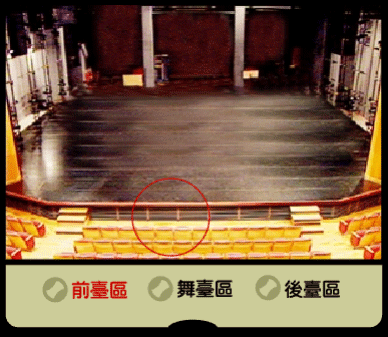
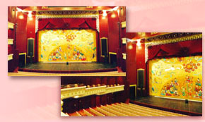
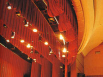

劇場形式指的是劇場的建築或表演場地的空間而言。正式的劇場空間大致上可分成三個部分，分別是前臺區（即觀眾席）、舞臺區（即表演區）以及後臺區（做為移換佈景、演員化妝、休息等多種用途）。
|
 |
以演員和觀眾的關係來說，劇場形式大致可以分為下列幾種：
鏡框式舞臺（proscenium stage）
即觀眾只能坐在舞臺前方觀看演出的劇場，是國內外最常見一種劇場建築。例如臺灣各縣市的文化中心表演廳、學校禮堂及國家戲劇院。它在表演區上方有一個很高的空間，做為懸吊燈光和佈景之用，後面有一個很大的「後臺」空間。

伸展式舞臺（thrust stage）
即觀眾坐在舞臺三邊觀賞的舞臺，如傳統廟宇中庭的戲臺。有些伸展式舞臺是和鏡框式舞臺結合在一起的。
圓形舞臺（arena stage）
舞臺四面都有觀眾。有人把它和伸展式舞臺都叫開放式舞臺。
黑盒子（black box）
一個全部牆壁、天花板和地板都是黑色的空間，可以隨導演的構想任意安排觀眾區和表演區的相關位置。如很多實驗劇場都是。
如果依據觀眾座位的多寡來分：
我們大致可以把劇場分為大、中、小型三類。大型劇場約1200以上個座位，中型劇場約 500－1200 個座位，小型劇場約 150－500 個座位。另外，實驗性較強、經費短缺的小劇場，常會利用咖啡屋、排練場、藝廊、閒置空間等場地來演出。其實，除了原來就設計為演戲專用的劇院建築外，任何一個空間都可以演戲。例如廣場、街道，禮堂、教室、操場等地方，加上簡單的燈光、音響設備，都可以變成一個表演空間。如果白天在室外，甚至連燈光都可以不用。
一個專業劇場就像所羅門王的寶藏一樣，藏有許多的「機關」，每個「機關」都有專人負責。下面略加介紹：
燈光設備 ─
燈光系統由燈具、調光器、燈光控制盤三部份構成。除了觀眾區的照明燈光外，舞臺上用的燈具有聚光燈、散光燈、效果燈，各司不同功能。

音響設備 ─
有對講機、耳機、麥克風，以及播放音樂、音效的錄放音機，雷射唱盤、揚聲器（喇叭）、混音器等等。
舞臺上硬體設備 ─
前方有大幕、防火幕、簷幕、舞臺左右翼幕、後方的背幕和天幕等等。現代較完善的舞臺上多有轉臺（turntable）、活門（trap doors）、臺車（wagons）等設備。
但是在許多小劇場或學校禮堂等地方，除了照明燈光外可能什麼也沒有，其他的燈光、音響器材都得臨時佈置。不過，一個簡單的演出也可以什麼設備都沒有，只要有一個可容納觀眾和演員表演的空間就可以了。
工作分配
任何演出都是團隊聯合工作（teamwork）。這個團隊的大小視演出的規模而定。不過，在製作一次演出時通常要有下列的人員：
製作人 ─
負責經費籌募、尋找演出場地、聘請編劇、導演等主要工作人員。有的製作人也參與演出劇本的選擇。
編劇 ─
編寫演出劇本。（如果選擇已經出版的劇本，就不用編劇了）。
導演 ─
負責劇本的詮釋、整個演出的構想、演員的甄選、
決定設計人員等。接下去他要和設計人員溝通，並擬定排戲時間、程序，開始排戲。
演員 ─
扮演劇中角色。學校自製的兒童劇和青少年劇可以由學生、老師、家長共同擔任，藉以加強師生感情、以及促進家長和學校的關係。
設計群 ─
包括舞臺佈景、燈光、音樂／音效、造型（服裝、化妝）、道具等設計人員。他們都必須先和導演溝通設計 理念，然後分工合作，共同完成整個設計。負責舞臺 設計者則必須在開始排戲前提出場景的平面 圖，最好還有場景模型，向導演和演員詳細 說明，導演、演員才能開始排練。（雖然學 校中以學生為主的演出，因為經費很少，許 多工作都無法做到專業的程度，但是「紙上 作業」還是應該努力追求盡善盡美，藉以養 成一種良好的工作習慣。）

舞臺監督 ─
在演出前舞臺監督要參加所有製作會議，負責排練場地、時間的安排，協助導演記錄排練進度等。到演出時要先勘察演出場地和與演出相關的場地設施（如安全設施）。當工作人員進入劇場開始裝置佈景、燈光、音響等工作時，他要負責整個協調工作。簡單地說，在進入劇場前，導演是主帥；進入劇場後，舞臺監督才是三軍總司令。
其他工作人員 ─
除上述的主要工作群外，一齣戲的演出還必須有很多人來共同努力。例如佈景的製作與搭建、服裝的製作、燈光的裝置等等，都不是一兩個人能夠勝任的。
行政群 ─
行政群包括行政總監、公關／文宣人員、票務人員、前臺經理等。行政總監負責準備排練用劇本、申請演出版權、掌握經費等工作。公關／文宣人員負責宣傳、勸募廣告款、貴賓券等工作。票務人員負責票券的銷售、清點、結帳等工作。前臺經理則領導一群工作人員（多為志工）負責服務觀眾，如帶位、銷售節目單、收集觀眾意見調查表、以及代叫計程車等臨時性工作。（學校演出不是商業劇場，是以教學為目的，但是仍需要有負責上列工作的人員，來協助推動整個演出。）